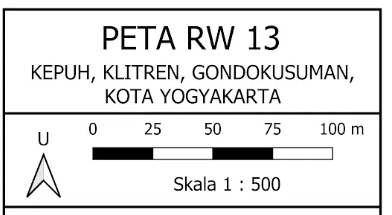
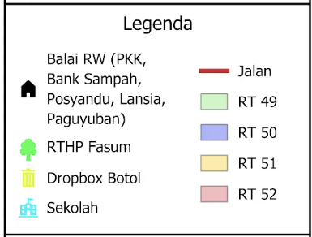
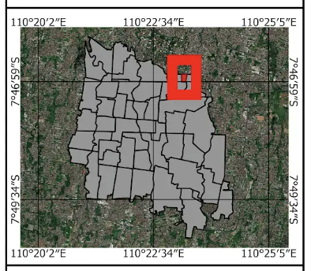
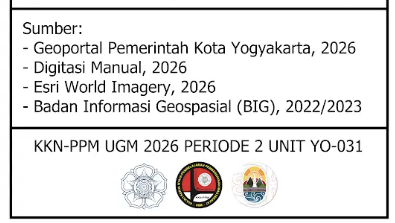

map
Peta PDF
Peta Wilayah RW 13
Pembuatan peta wilayah yang menampilkan batas RT dan RW, jaringan jalan, fasilitas umum, titik dropbox, serta lokasi penting lainnya sebagai media informasi bagi warga.

download Materi dan Media
Unduh atau lihat peta resolusi tinggi untuk kebutuhan pencetakan atau referensi digital.
photo_library Dokumentasi




add_photo_alternate